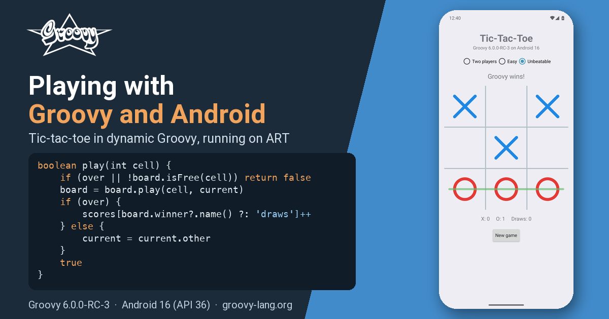
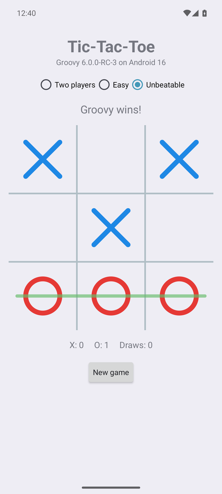
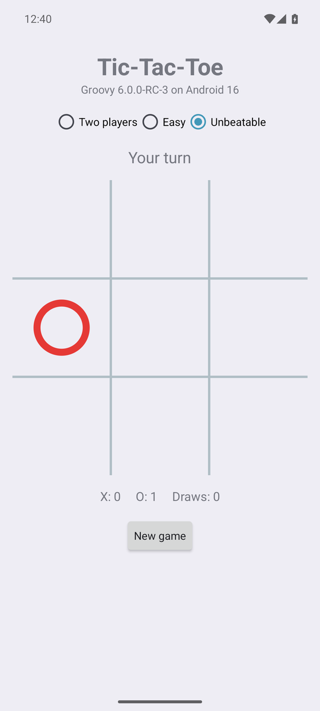

Playing with Groovy™ and Android
Published: 2026-09-18 02:00PM

Introduction
Groovy and Android have history. Back in the Groovy 2.4 days, a special grooid build of the Groovy jar and a dedicated Gradle plugin let you write Android apps in Groovy. Android’s tooling moved on quite dramatically over the following years, and Groovy’s Android story went quiet.
Groovy 6 gives us a fresh opportunity. A good deal of the work that went into
Groovy 6 was about making the runtime leaner and more predictable: every
dynamic call now goes through invokedynamic, the reflective machinery has
been trimmed and comes with reachability metadata for GraalVM native images,
and the runtime no longer leans on a few JDK corners that only a full JDK has.
A happy side effect is that dynamic Groovy now runs on a modern Android
runtime (ART) using a stock Android Gradle plugin. No Groovy-specific plugin
is needed.
We are calling this a preview feature in Groovy 6. It works, as this post shows, but it needs one small shim (more on that later), and the current release candidate has a couple of rough edges. Removing the shim is earmarked for Groovy 7, and we expect the rough edges to be gone before Groovy 6.0.0 final. Consider this post a taste of what’s coming, and an invitation to play along.
Rather than "hello world", let’s build a game: tic-tac-toe (noughts and crosses for some of us), with an unbeatable computer opponent.
The app

There are three ways to play: two people passing the phone around, an easy opponent that moves at random, and an unbeatable one that has searched the whole game. The board is drawn on a canvas, the winning line is highlighted, scores are kept, and the game in progress survives rotation and relaunch. Nothing fancy, but a real app that real people can play (well, real people who enjoy losing to their phone).
Everything you see is Groovy 6.0.0-RC-3 running on an Android 16 (API 36) emulator. The project is a stock Android application module plus a plain Groovy library module, built with the Android Gradle Plugin 9.4, Gradle 9.7 and JDK 17. Both the debug build and the R8-shrunk release build were used while writing this post.
The source is on GitHub if you want to follow along (link at the end).
The engine: plain Groovy, tested on the JVM
The game logic has no Android in it at all. Board is an immutable 3x3
board with cells numbered 0 to 8. It is statically compiled since it sits at
the bottom of every search, but it reads like any other Groovy class:
@CompileStatic
final class Board {
static final List<List<Integer>> LINES = [
[0, 1, 2], [3, 4, 5], [6, 7, 8], // rows
[0, 3, 6], [1, 4, 7], [2, 5, 8], // columns
[0, 4, 8], [2, 4, 6] // diagonals
]
private final List<Mark> cells
...
Mark getAt(int cell) { cells[cell] }
Board play(int cell, Mark mark) {
if (cells[cell]) throw new IllegalArgumentException("cell $cell is already taken")
List<Mark> next = new ArrayList<>(cells)
next[cell] = mark
new Board(next)
}
List<Integer> getFreeCells() {
(0..8).findAll { int cell -> !cells[cell] }
}
List<Integer> getWinningLine() {
LINES.find { List<Integer> line ->
Mark first = cells[line[0]]
first && line.every { int cell -> cells[cell] == first }
}
}
Mark getWinner() {
List<Integer> line = winningLine
line ? cells[line[0]] : null
}
boolean isFull() { !cells.contains(null) }
boolean isOver() { winner || full }
}The unbeatable opponent is a full-depth minimax search. Tic-tac-toe has only 5478 reachable positions, so every position visited is remembered, and after one search from an empty board the whole game is known. Positions are stored with the player to move always called X, so games opened by either mark share the table:
@CompileStatic
final class Minimax {
private static final Map<String, Integer> VALUES = new ConcurrentHashMap<>()
private static final Random RANDOM = new Random()
/** The best cell for {@code mark} to play. Ties are broken at random so games differ. */
static int bestMove(Board board, Mark mark) {
Map<Integer, List<Integer>> cellsByValue = board.freeCells.groupBy { int cell ->
-value(board.play(cell, mark), mark.other)
}
List<Integer> best = cellsByValue.max { Map.Entry<Integer, List<Integer>> entry -> entry.key }.value
best[RANDOM.nextInt(best.size())]
}
/** Positive for a forced win, negative for a forced loss, zero for a draw. */
static int value(Board board, Mark toMove) {
if (toMove == Mark.O) return value(board.swapped, Mark.X)
String key = board.toString()
Integer known = VALUES[key]
if (known != null) return known
int result
if (board.winner) {
result = -(board.freeCells.size() + 1) // O has just won
} else if (board.full) {
result = 0
} else {
result = board.freeCells.collect { int cell -> -value(board.play(cell, Mark.X), Mark.O) }.max()
}
VALUES[key] = result
result
}
}The three ways to play are an enum whose constants carry a closure. Groovy lets an enum constant take a closure as a constructor argument, which is a tidy way to bundle a strategy with its label:
enum Mode {
TWO_PLAYERS('Two players', null),
EASY('Easy', { Board board, Mark mark -> board.freeCells.shuffled().first() }),
UNBEATABLE('Unbeatable', { Board board, Mark mark -> Minimax.bestMove(board, mark) })
final String label
private final Closure<Integer> chooser
Mode(String label, Closure<Integer> chooser) {
this.label = label
this.chooser = chooser
}
boolean isComputer() { chooser != null }
int choose(Board board, Mark mark) { chooser(board, mark) }
}A Game ties these together: the board, whose turn it is, the mode and the
running score. It is dynamic Groovy, and the heart of it is a dozen lines:
class Game {
static final Mark HUMAN = Mark.X
Board board = new Board()
Mode mode = Mode.UNBEATABLE
Mark starter = Mark.X
Mark current = Mark.X
Map<String, Integer> scores = [X: 0, O: 0, draws: 0]
boolean isOver() { board.over }
boolean isComputerTurn() { mode.computer && !over && current != HUMAN }
boolean play(int cell) {
if (over || !board.isFree(cell)) return false
board = board.play(cell, current)
if (over) {
scores[board.winner?.name() ?: 'draws']++
} else {
current = current.other
}
true
}
void newGame() {
if (over) starter = starter.other
board = new Board()
current = starter
}
...
}Because none of this touches Android, it is tested where tests are cheap: plain JUnit 5 tests run by Gradle on the JVM. My favourite plays two hundred games against a random opponent and checks the computer never loses:
@Test
void 'never loses to a random opponent as either mark'() {
def random = new Random(42)
200.times { n ->
def computer = n % 2 == 0 ? X : O
def board = new Board()
def turn = X
while (!board.over) {
def free = board.freeCells
int cell = turn == computer ? Minimax.bestMove(board, turn) : free[random.nextInt(free.size())]
board = board.play(cell, turn)
turn = turn.other
}
assertNotEquals(computer.other, board.winner, "lost game $n: $board".toString())
}
}The screen: dynamic Groovy meets Android

Now for the Android part, and this is where it gets interesting: the custom
View that draws the board and the Activity that runs the screen are
dynamic Groovy. Android calls onMeasure, onDraw and onTouchEvent,
and every call inside them goes through the Groovy runtime on ART.
class BoardView extends View {
private Board board = new Board()
/** Called with the tapped cell number (0..8). */
Closure onCellTapped
private final Paint gridPaint, xPaint, oPaint, winPaint
...
@Override
protected void onDraw(Canvas canvas) {
super.onDraw(canvas)
int cell = cellSize
int size = cell * 3
int inset = cell.intdiv(4)
(1..2).each { i ->
canvas.drawLine(i * cell, 0, i * cell, size, gridPaint)
canvas.drawLine(0, i * cell, size, i * cell, gridPaint)
}
(0..8).each { i ->
def mark = board[i]
if (!mark) return
int left = (i % 3) * cell
int top = i.intdiv(3) * cell
if (mark == Mark.X) {
canvas.drawLine(left + inset, top + inset, left + cell - inset, top + cell - inset, xPaint)
canvas.drawLine(left + cell - inset, top + inset, left + inset, top + cell - inset, xPaint)
} else {
canvas.drawCircle(centreX(i), centreY(i), cell.intdiv(2) - inset, oPaint)
}
}
...
}
@Override
boolean onTouchEvent(MotionEvent event) {
if (event.action == MotionEvent.ACTION_DOWN) {
int col = (event.x / cellSize) as int
int row = (event.y / cellSize) as int
if (col in 0..2 && row in 0..2) {
performHapticFeedback(HapticFeedbackConstants.VIRTUAL_KEY)
onCellTapped?.call(row * 3 + col)
}
performClick()
}
true
}
}One Groovy-ism worth knowing if you write drawing code: Groovy promotes
float arithmetic to double, and a Double won’t dispatch dynamically to
Canvas’s `float parameters, whereas an Integer will. Keeping the
geometry in integer pixels, as above, sidesteps that neatly.
The activity builds its screen in code, which is where Groovy’s property
syntax, tap, and closures-as-listeners really shine:
def modes = new RadioGroup(this).tap {
orientation = LinearLayout.HORIZONTAL
gravity = Gravity.CENTER
}
Mode.values().each { mode ->
modes.addView(new RadioButton(this).tap {
text = mode.label
id = mode.ordinal() + 1
})
}
modes.check(game.mode.ordinal() + 1)
modes.setOnCheckedChangeListener { group, checkedId ->
def mode = Mode.values()[checkedId - 1]
if (mode != game.mode) {
game.mode = mode
game.newGame()
render()
}
}
boardView = new BoardView(this).tap {
onCellTapped = { int cell ->
if (!game.computerTurn && game.play(cell)) render()
}
}
def newGame = new Button(this).tap {
text = 'New game'
setOnClickListener { game.newGame(); render() }
setOnLongClickListener { game.resetScores(); render(); true }
}Every Android listener interface is a SAM type, so a closure slots straight
in. The same goes for Runnable: the computer’s move is searched on a
background thread and applied on the UI thread, but only if the game it was
searched for is still the one on screen (the user may have started a new
game or rotated the phone in the meantime):
private void think() {
thinking = true
def board = game.board
def mark = game.current
new Thread({ ->
int cell = game.mode.choose(board, mark)
runOnUiThread {
thinking = false
if (active && game.board == board && game.computerTurn) {
game.play(cell)
render()
}
}
} as Runnable).start()
}Finally, the whole game is saved to the activity’s preferences after every
change, using the one-line save() form that Game provides, so rotation
and relaunch both just pick up where you left off. Groovy’s string handling
makes the round trip a couple of lines:
String save() {
"$board $mode $starter $current ${scores.X} ${scores.O} ${scores.draws}"
}
static Game restore(String saved) {
def (board, mode, starter, current, x, o, draws) = saved.split(' ')
new Game(board: Board.parse(board), mode: Mode.valueOf(mode),
starter: Mark.valueOf(starter), current: Mark.valueOf(current),
scores: [X: x as int, O: o as int, draws: draws as int])
}How it is built
The recipe is pleasingly boring, which is rather the point. There are three modules:
-
game/is a plain Groovy library module. It applies the ordinarygroovyGradle plugin and compiles against the SDK’sandroid.jarstubs. It holds all of the Groovy code above, and its tests. -
app/is an ordinary Android application module: manifest, theme, launcher icon, R8 rules. It depends ongamelike any other jar and supplies the Android flavour of the Groovy runtime. -
shim/is the preview part, described below.
The interesting lines from game/build.gradle:
plugins {
id 'groovy'
}
dependencies {
// compile against the plain jar; the app module supplies the Android (grooid) jar at run time
compileOnly "org.apache.groovy:groovy:${groovyVersion}"
compileOnly files("${sdkDir()}/platforms/android-36/android.jar")
testImplementation "org.apache.groovy:groovy:${groovyVersion}"
testImplementation 'org.junit.jupiter:junit-jupiter:6.1.3'
testRuntimeOnly 'org.junit.platform:junit-platform-launcher'
}And from app/build.gradle:
android {
compileSdk 36
defaultConfig {
// Groovy 6 emits invokedynamic for every dynamic call, which D8 accepts from API 26 up
minSdk 26
...
}
}
dependencies {
implementation project(':game')
// the groovy jar with java.beans replaced by a repackaged openbeans, since Android has no Introspector
runtimeOnly "org.apache.groovy:groovy:${groovyVersion}:grooid"
implementation project(':shim') // preview: java.lang.invoke.SwitchPoint for ART
}The grooid classifier jar is the same idea as in the Groovy 2.4 days: the
Groovy runtime with java.beans swapped for a repackaged OpenBeans, since
Android has no Introspector. D8 turns the class files from both modules
into DEX like any other library. The release build shrinks with R8, and the
keep rules for Groovy’s own reflective surface are derived from the
reachability metadata the Groovy jars now ship for native images, so the
native-image work and the Android work feed each other.
About that shim
Groovy’s runtime uses java.lang.invoke.SwitchPoint to invalidate cached
call sites when a metaclass changes. ART does not have SwitchPoint. The
shim module supplies a forty-line stand-in built on MutableCallSite,
which ART does have, compiled into the app’s DEX under the java.lang.invoke
package. On a JVM the real class always wins; on Android the app’s copy is
the only one there is.
This is what makes the feature a preview. The shim works, and the app you see here runs on it, but it is not something we want to ask app developers to carry around. For Groovy 7 we have earmarked an invalidation abstraction inside the runtime itself, so that no shim is required, and we expect app speed to be better without it too.
How fast is it?
Honest numbers from the arm64 emulator, since this is the question everyone asks:
| Measurement | Result |
|---|---|
Whole-game search at startup, cold ART, background thread |
about 3 to 4 seconds |
The same search on a warm JVM |
about 50 ms |
Each computer move after that |
1 to 10 ms |
Release APK after R8 |
about 1 MB |
Debug APK |
about 4.9 MB |
The app is perfectly responsive: the search runs in the background while you are still reading the title, and every move after it is a table lookup. But the gap between a cold ART and a warm JVM is real. Some of it is ART’s interpreter warming up, some of it is the runtime’s reflective cold tier, and some of it is the shim. This is an evolving story; the Groovy 7 work is aimed squarely at it, and we would rather show you the numbers now than pretend there is nothing to improve.
Rough edges in RC-3
Two things came up while writing this post, and both are expected to be fixed before Groovy 6.0.0 final:
-
Static extension methods such as
Thread.start { }andsleepare not available on Android in RC-3 (GROOVY-12418), which is why the code above usesnew Thread(closure as Runnable). -
The R8 release build needs one keep rule beyond the ones derived from the reachability metadata, for the helper Groovy enums call by name (GROOVY-12419).
Neither gets in the way of writing the app; they are the kind of thing a preview is for.
Further information
Conclusion
Writing an Android app in Groovy 6 turns out not to be a hard thing to do: a plain Groovy module, a stock Android module, one runtime jar and, for now, one small shim. The engine is ordinary Groovy tested on the JVM, and the screen is dynamic Groovy talking to the Android APIs with all the usual sugar. It leverages the runtime and native-image work that went into Groovy 6, and Groovy 7 should make it easier and faster still. Go on, have a play.